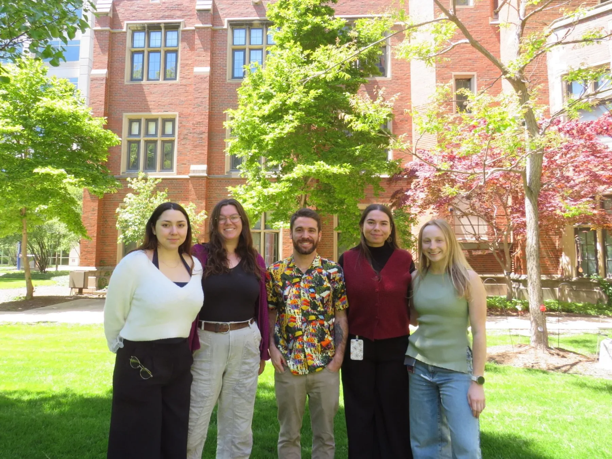
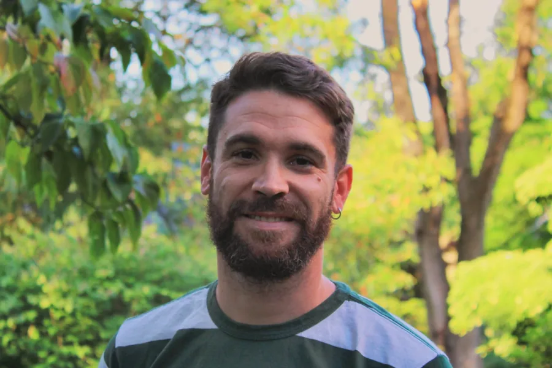
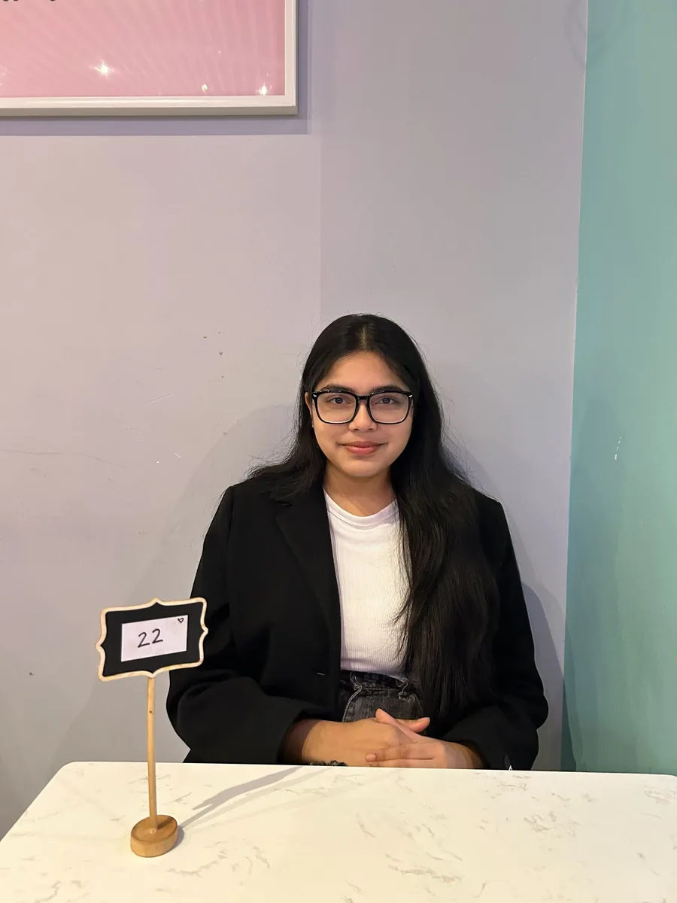

People

Miguel Á. Luján, PhD
Assistant Professor and PI
Miguel grew up in Sagunto, a town near Valencia, Spain. He earned a BSc in Psychology at Universitat Jaume I (Castellón) in 2014 and an MSc in Neuroscience in Dr. Olga Valverde's group at Universitat Pompeu Fabra (Barcelona) in 2016. A Spanish Ministry of Education FPU fellowship funded his PhD in Biomedicine, completed in 2020, on cannabidiol as a treatment to reduce cocaine use.
As a postdoctoral fellow in Dr. Joseph Cheer's lab at the University of Maryland, he studied how the dopamine and endocannabinoid systems interact in the mesolimbic pathway. In 2023 he received a K99/R00 Pathway to Independence Award from NIDA/NIH.
In 2025 he joined the University of Illinois Chicago as a tenure-track Assistant Professor in the Department of Anatomy and Cell Biology, College of Medicine. The lab studies the neurobiology of motivation, learning and addiction.
Current members
-
Caitlin Madden
Graduate student, GEMS
Caitlin is a PhD student in the GEMS program. She earned a BS in Behavioral and Cognitive Neuroscience at the University of Maryland in 2023, where she studied electrophysiological biomarkers of semantic deficits in Alzheimer's disease. She then held an NIH Intramural Research Training Award in Dr. Alexander Chesler's lab, studying how the structure of mechanosensitive ion channels relates to their function in pain and touch. She is interested in the circuits that drive behavior and is starting work on the neurobiology of addiction.
-

Grace Phillips
Graduate student, GPN
Grace graduated from Agnes Scott College in 2025 with a bachelor's degree in neuroscience. As an undergraduate she worked in Dr. Jesse Schank's lab at the University of Georgia on how neuropeptides and stress affect voluntary alcohol drinking. She is now in UIC's Graduate Program in Neuroscience, where she studies how substance use disorders develop and how they overlap with other psychiatric conditions.
-

Grace A. Crespo
Research assistant
Grace earned a bachelor's degree in Biological Sciences at UIC in 2024, with minors in Psychology and Chinese. She then worked as a research specialist in UIC's Department of Pharmacology, where she learned histology. She plans to start a PhD in neuroscience within the next two years and is interested in the mechanisms of motivation.
-
Marie Galindo
Research assistant
Marie joined the lab as a technician in 2025 after earning a bachelor's degree in Psychology, with a minor in Biology, at UIC. She started in neuroscience labs as a sophomore, caring for animals and facilities, and has since focused on the neurobiology of addiction, chronic drug exposure and behavioral analysis. She plans to pursue a PhD and is always ready to learn a new technique or help a colleague.
-
Isabella Matuk
Undergraduate volunteer
Isabella is a second-year UIC student majoring in Biological Sciences, with a concentration in Molecular, Cellular and Organismal Biology. She volunteers at UI Health and joined the lab to start her research experience. After graduating she plans to study medicine and specialize in pediatric oncology.
-
Ngoc Dang
Undergraduate volunteer
Ngoc is a UIC undergraduate majoring in Data Science with a concentration in Bioinformatics. In Dr. Tori Humiston's lab at MCPHS she studied factors that may contribute to opioid misuse and ran R analyses of pain interference, mental health and health literacy. In the lab she wants to learn how computational methods can reveal the neural patterns behind motivated behavior.
-
Jacob Castro
Undergraduate volunteer
Jacob is a senior at UIC majoring in Biological Sciences on the pre-medical track. Before joining the lab he took part in the UICHeart Summer Research and Graduate School Mentorship Program, studying potential treatments for hypertension. He is interested in how substance use affects behavior and development, and plans to pursue an MD.
-
Giovanna Cuevas
Undergraduate volunteer
Giovanna is a third-year UIC student majoring in Biochemistry. Working with patients with mental illness made her want to understand the biology behind these conditions, and she joined the lab to study it through research.
Alumni
 Jeet PatelUndergraduate CURA trainee
Jeet PatelUndergraduate CURA trainee
Zarlish AnisUndergraduate volunteer